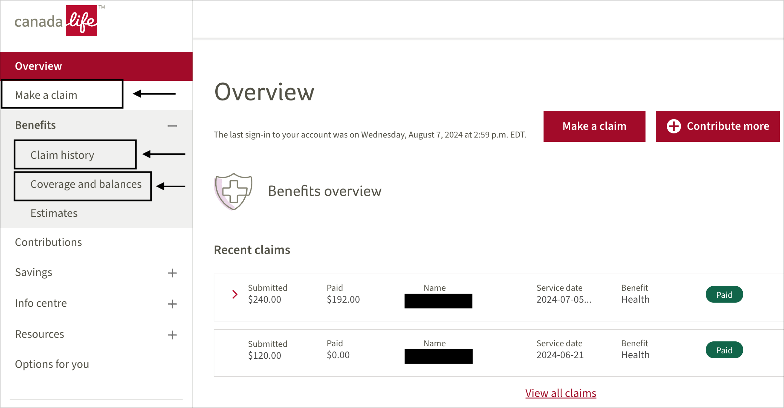
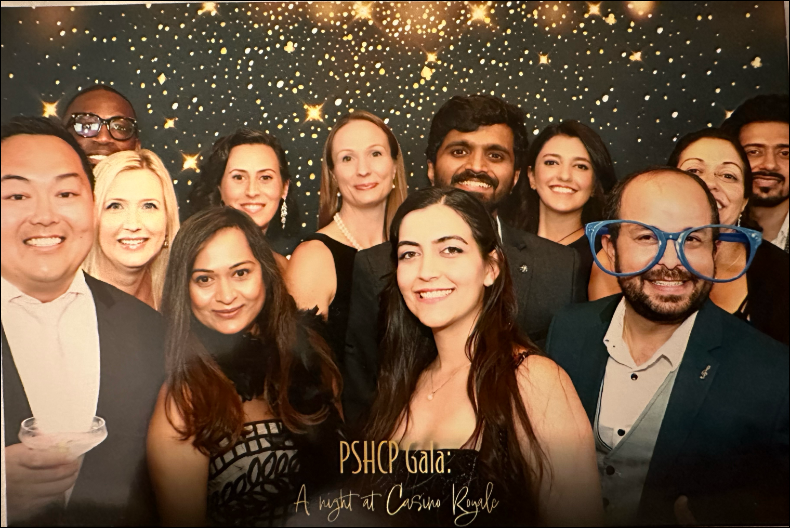
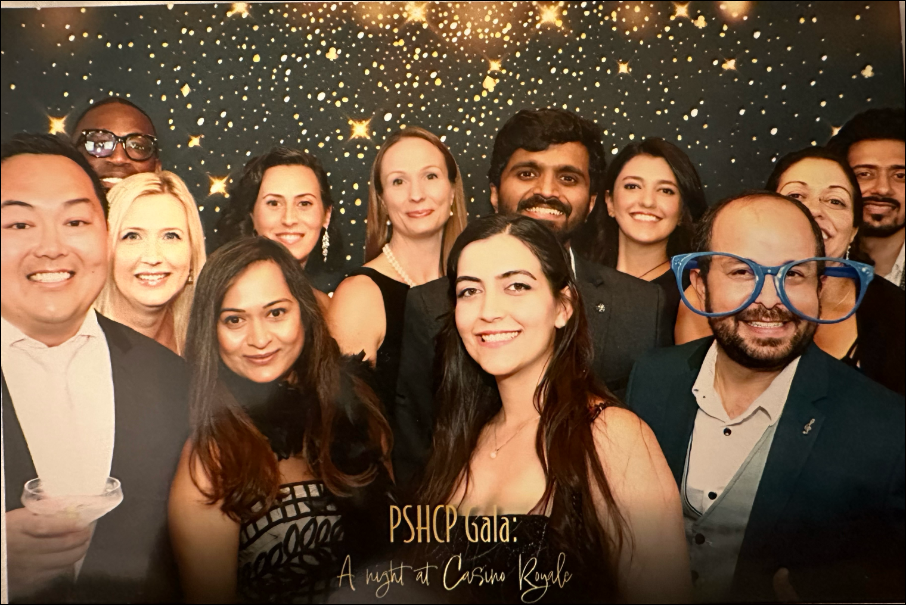
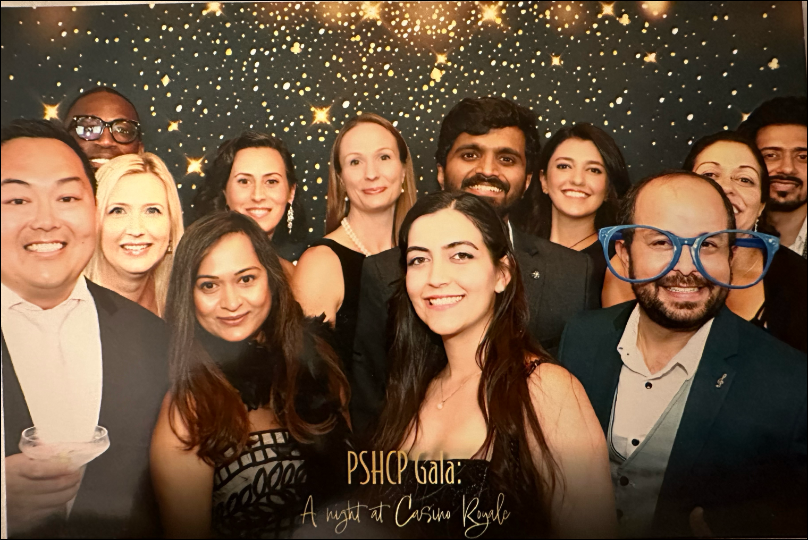

 


My role
I am a senior UX designer in Canada Life where I work in a team to redesign three main epics for the product: Make a claim, Claim history, and Coverage and balances.
The tools
- Figma
- Mural, and FigJam for brainstorming
- UserZoom and Teams for usability studies
- Qualitrics and Adobe Analytics for qualitative and quantitative data.
My team
My core team includes: 3 UX Designers / 1 UX Manager / 1 UX Writer / 1-2 Accessibility Experts / Technical team (Including backend and front-end developers 10-15) / 3-4 QAs / 2 BSAs / A PO and a Scrum Master